ArduTC¶
Introducción¶
ArduTC es una aplicación informática de software libre desarrollada por el equipo AutoISATeam de la Universidad de Málaga que permite la interacción de un runtime de TwinCAT con plataformas microcontroladoras y placas de desarrollo hardware.
Plataformas compatibles
ArduTC debe funcionar con todas las plataformas compatibles con Telemetrix: Arduino con arquitectura AVR y ARM (UNO, Nano, Mega, Leonardo), Arduino Renesas (Serie UNO R4), Raspberry Pi Pico (RP2040 ), Espressif (ESP8266 y ESP32) y STM32.
ArduTC «convierte» una placa microcontroladora conectada a un PC con Windows mediante USB en un terminal de entradas y salidas digitales para TwinCAT. De forma que un programa de PLC escrito en un lenguaje de la norma IEC 61131-3, que se procese en cualquier sistema destino (runtime local/remoto o el simulador UmRT_Default), puede emitir y recibir información de entrada y salida hacia y desde una placa microcontroladora.
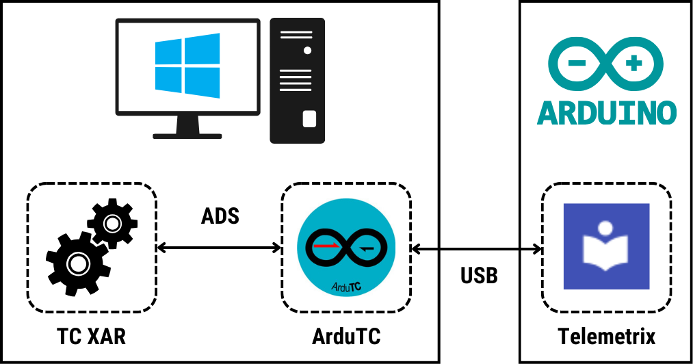
Info
ArduTC utiliza las siguientes librerı́as de software libre escritas en el lenguaje Python.
- pyADS (Stefan Lehmann): para la comunicación con TwinCAT.
- Telemetrix (Alan Yorinks): para la comunicación con la placa microcontroladora.
- PyQT5 (Riverbank Computing Limited): para la interfaz gráfica.
Adquiriendo una placa microcontroladora compatible y algunos componentes electrónicos básicos, y gracias a la generosa política de licencias de TwinCAT, cualquier persona interesada en la programación de PLC, puede con ArduTC realizar prácticas de automatización interactuando con hardware real (pulsadores, lámparas, motores, relés, sensores de temperatura, ...) utilizando un sistema software de programación profesional (TwinCAT).
Aprender «haciendo que las cosas se muevan» con sistemas reales a muy bajo coste.
ArduTC dispone de dos funcionalidades principales.
- Enlazar, de manera similar a TwinCAT, las variables de entrada y salida analógicas y digitales de una tarea TwinCAT con los pines analógicos y digitales de una placa microcontroladora.
- Servir de interfaz entre el runtime del sistema destino de TwinCAT seleccionado y la placa microcontroladora, para que una tarea IEC 61131-3 de TwinCAT gestione de forma efectiva y transparente sus entradas y salidas.
Importante
Hay que destacar que aunque la transmisión de datos mediante ADS entre el runtime de TwinCAT y ArduTC se produce en tiempo real, la latencia que introduce la conexión USB con el sistema microcontrolador no garantiza que globalmente se cumpla tal requisito. Por tanto, este sistema de comunicación no puede sustituir, en ningún caso, a un sistema industrial basado en EtherCAT u otro protocolo de bus de campo compatible con los dispositivos fı́sicos de Beckhoff. Sin embargo, la velocidad de respuesta que ha demostrado en las pruebas realizadas es suficientemente alta como para poder ser utilizado como equipo para realizar prácticas o pruebas de concepto.
Impacto y Contribuciones de ArduTC
Las principales contribuciones de ArduTC son:
- Fomentar la expansión del ecosistema de automatización industrial TwinCAT en la industria.
- Democratizar el aprendizaje práctico de la programación de PLC, reduciendo drásticamente los costes asociados al hardware.
📦 Código Fuente y Descarga¶
El instalador de la aplicación puede descargarse desde el siguiente repositorio:
- Google Drive: Descargar
ArduTC_Instalador.exe
🧰 Materiales y Requisitos¶
Hardware¶
- PC con Windows.
- Placa de desarrollo compatible y cable USB.
- Kit de componentes electrónicos básicos: LEDs, pulsadores, potenciómetros, servomotores, ... para realizar el montaje deseado.
Software¶
- TwinCAT:
- Entorno de desarrollo TwinCAT XAE
- Sistema destino TwinCAT XAR (runtime local/remoto o simulador UmRT_Default).
- Drivers necesarios para la placa microcontroladora.
- ArduTC.
📐 Interfaz de ArduTC¶
La interfaz de usuario de ArduTC se divide en cinco áreas/paneles funcionales.
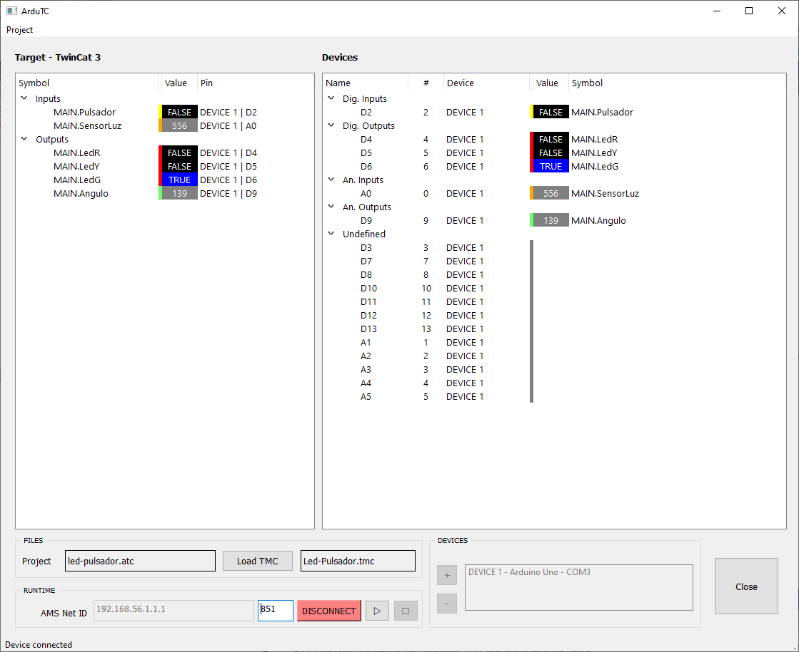
- Target: lista de variables (símbolos) exportadas desde el proyecto TwinCAT. Las entradas digitales se resaltan en amarillo y las salidas digitales en rojo.
- Devices: lista de pines de conexión disponibles en la placa microcontroladora seleccionada.
- FILES: para la gestión de ficheros de símbolos (
.tmc). - RUNTIME: parámetros de la comunicación con el sistemas destino (dirección AMS NetID) y el proyecto PLC (puerto de comunicaciones) junto al botón de conexión.
- DEVICES: detección y selección de placas microcontroladoras conectadas al ordenador.
🛠️ Guía de uso¶
Proyecto TwinCAT¶
Crear un proyecto TwinCAT con variables de entrada y salida y desplegarlo sobre un sistema destino. ➡️
Info
- Tras la construcción del proyecto se crear el archivo Archivo de Descripción de Módulo
.tmc(TwinCAT Module Class) que describe la interfáz pública y la estructura interna del proyecto PLC y la lista de símbolos (que incluye variables de entrada y salida). - Este archivo se encuentra dentro de la carpeta del proyecto PLC.
Cargar Símbolos¶
-
Abrir la aplicación ArduTC.
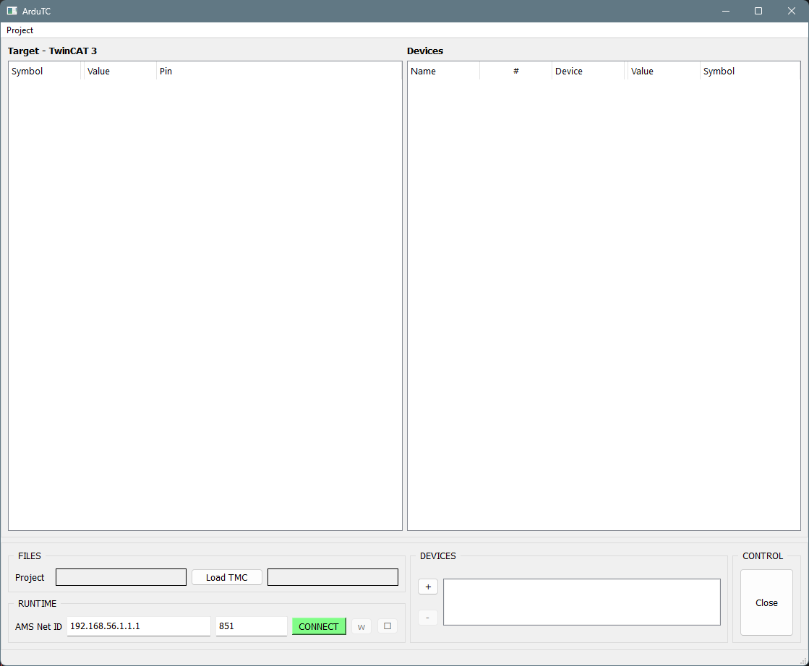
-
En FILES, clic izquierdo sobre el botón
Load TMCy seleccione el archivo.tmcgenerado durante la construcción del proyecto PLC en TwinCAT.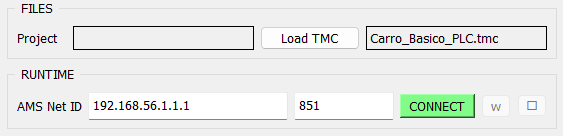
Resultado de la operación
Todas las variables de entrada y salida del proyecto PLC aparecerán automáticamente en el panel Target.
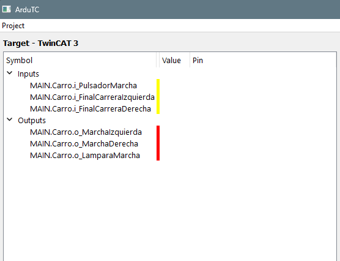
Seleccionar Placa Microcontroladora¶
- Conectar una placa microcontroladora mediante el cable USB al ordenador.
-
En DEVICES, hacer clic izquierdo sobre el botón
+para buscar las placas conectadas.Resultado de la operación
Se mostrarán, en una ventana emergente, todas las placas microcontroladoras conectadas a los puertos de comunicaciones
COMcorrespondientes.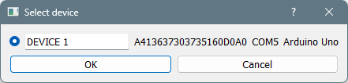
-
Seleccionar la placa microcontroladora deseada.
Resultado de la operación
Se mostrará en la Devices la lista de pines digitales y analógicos disponibles de la nueva placa añadida.
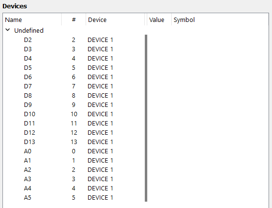
Vincular variables¶
-
En Target, hacer doble clic sobre la variable que desea enlazar.
-
En el cuadro desplegable Link variables, seleccionar el pin de la placa microcontroladora en el que está conectado físicamente el componente correspondiente que se desea enlazar con la variable.
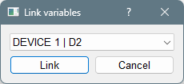
-
Confirmar el vínculo entre variable y pin pulsando clic izquierdo sobre el botón
Link.Resultado de la operación
- Se mostrará en Target el nombre del pin asignado a la variable.
- Se mostrará en Devices el nombre de la variable asignada al pin.
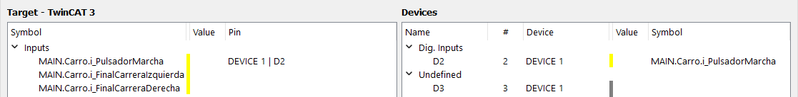
-
Repetir esta operación hasta vincular todas las variables necesarias.
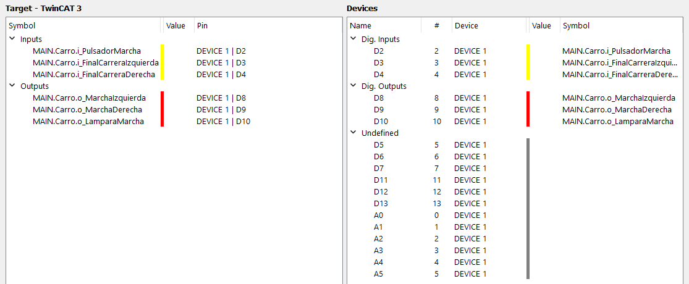
Configurar comunicaciones¶
-
En RUNTIME introducir la dirección AMS Net ID del sistema destino y el puerto de comunicaciones del proyecto PLC.
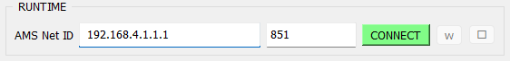
Info
- La dirección AMS Net ID del sistema destino puede encontrase en el panel de explorador de la solución en
SYSTEM > Routes > NetId Management > Target NetId(ejemplo de AmsNetId192.168.4.1.1.1).
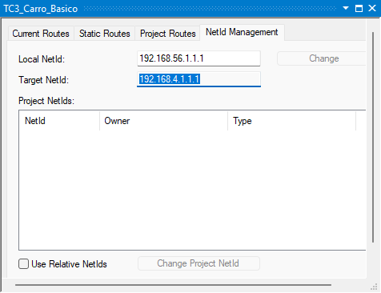
- El puerto de comunicaciones del proyecto PLC puede encontrase haciendo doble-clic sobre el nombre del proyecto PLC en
Project > Port(Normalmente851).
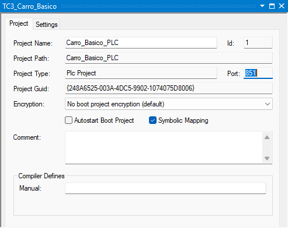
- La dirección AMS Net ID del sistema destino puede encontrase en el panel de explorador de la solución en
Conectar¶
-
Conectar haciendo clic izquierdo sobre el botón
CONNECT.Resultado de la operación
Si la vinculación es exitosa, la barra de estado inferior mostrará el mensaje
Device connectedy el botón cambiará a color rojo indicandoDISCONNECT.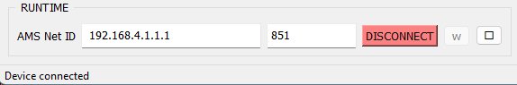
-
Con los botones run/stop del panel RUNTIME se puede controlar el estado de ejecución/parada del proyecto PLC en TwinCAT.
-
Se puede obervar que el estado de las variables y los pines en TwinCAT y la placa microcontroladora cambian sincronizadamente cuando ambos están conectados mediante ArduTC.
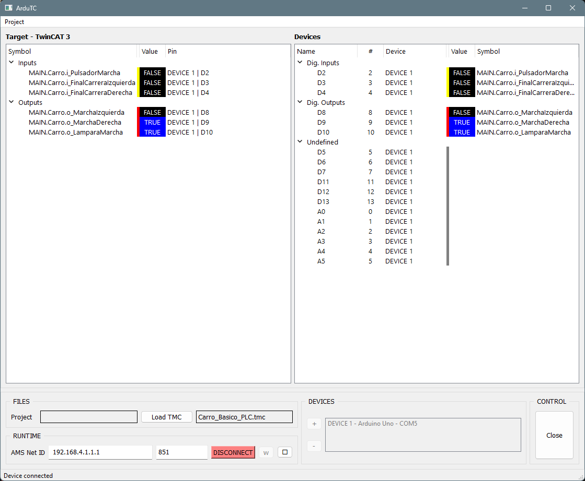